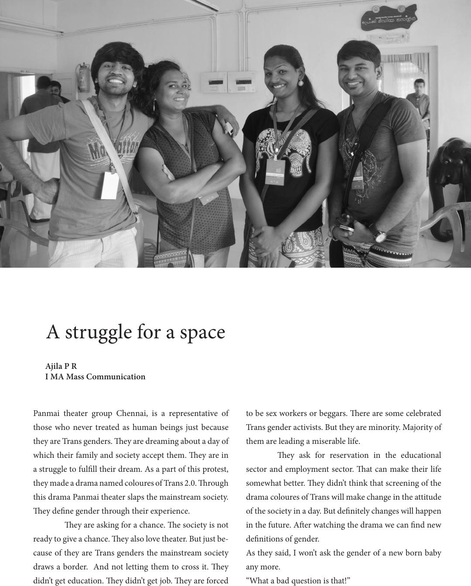

Panmai theater group Chennai, is a representative of
those who never treated as human beings just because
they are Trans genders. ey are dreaming about a day of
which their family and society accept them. ey are in
a struggle to fulll their dream. As a part of this protest,
they made a drama named coloures of Trans 2.0. rough
this drama Panmai theater slaps the mainstream society.
ey dene gender through their experience.
ey are asking for a chance. e society is not
ready to give a chance. ey also love theater. But just be-
cause of they are Trans genders the mainstream society
draws a border. And not letting them to cross it. ey
didn’t get education. ey didn’t get job. ey are forced
to be sex workers or beggars. ere are some celebrated
Trans gender activists. But they are minority. Majority of
them are leading a miserable life.
ey ask for reservation in the educational
sector and employment sector. at can make their life
somewhat better. ey didn’t think that screening of the
drama coloures of Trans will make change in the attitude
of the society in a day. But denitely changes will happen
in the future. Aer watching the drama we can nd new
denitions of gender.
As they said, I won’t ask the gender of a new born baby
any more.
“What a bad question is that!”
A struggle for a space
Ajila P R
I MA Mass Communication